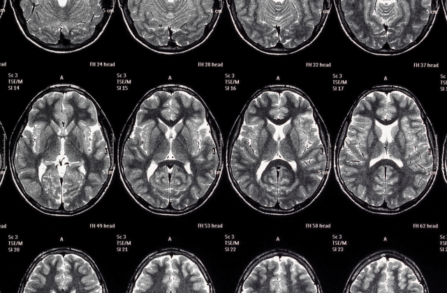

Customer Testimonials
Why patients love our neural nanobot treatment:

Real Stories from Real Lives
- "Before Eloheh, I faced invasive surgery for my epilepsy. Now, I live seizure-free—no scars, no downtime."
– Maya R., 42, Atlanta
- "The nano-treatment helped regulate my Parkinson’s tremors. It’s like someone reset my brain. I’m finally steady again."
– Greg H., 68, Seattle
- "My depression was crippling. I couldn’t function. But after Eloheh’s neural sync bot, I feel like myself for the first time in years."
– Olivia D., 30, New York City
Top 3 Reasons Customers Recommend Us
- No incisions or surgical scars
- Fast recovery time—most patients resume activities within 24 hours
- Personalized, AI-enhanced treatment algorithms
Download to read more!
Curious about how nanobot medicine works? Check out this article on medical nanobots.
Contact me with questions or if you want your story featured!
Last modified: